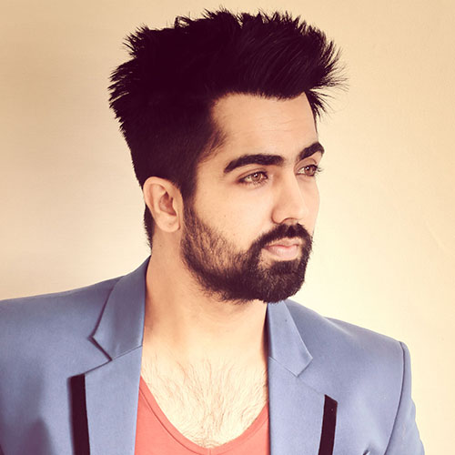

Hardy Sandhu
About Artist
Sandhu was born into a sikh jat family.His father's name was Jasvinder Singh Sandhu.His family was very supportive. Singing was his hobby since childhood but he did not sing when he was in school DAV Public school,Patiala.
He initially wanted to be a cricket player, but suffered an injury, forcing him to give up cricket in 2007, and shifted his focus from sports to singing.He played in under 19 cricket team and Punjab Ranji team. There Shikhar Dhawan was his roommate. He also did practice with Ishant Sharma and Sachin Tendulkar. But his elbow injury changed his whole life.
He went to Australia by student visa to cure the injury by good treatments. For his survival he started to drive taxi in Australia. When he saw that the IPL started and his juniors were selected he came back to India but due to another injury he had to leave cricket. Then he took vocabulary training for 18 months and sang his first song Tequila Shot composed by V. Grooves.